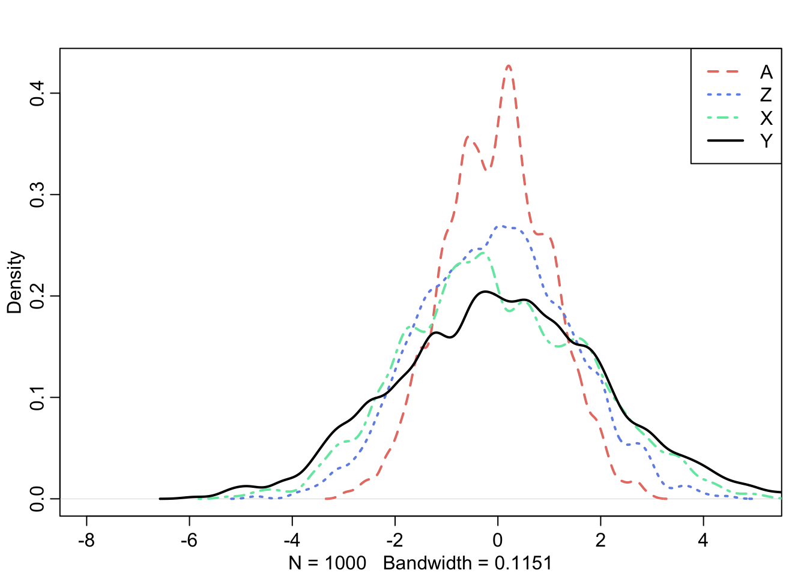
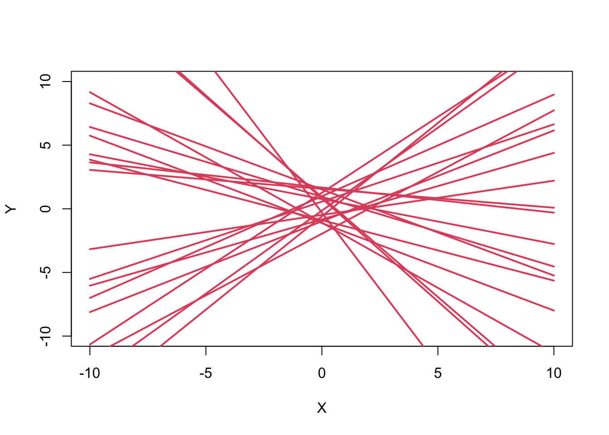
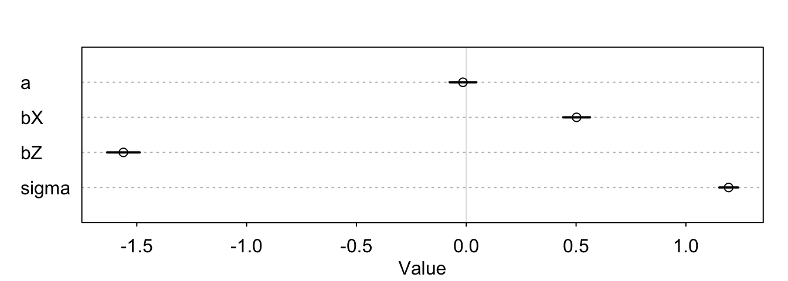
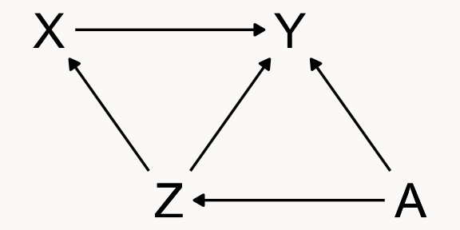
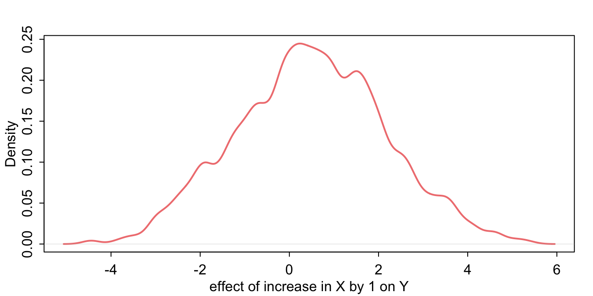

Statistical Rethinking 2026, A06
R
causal inference
confounding
Bayes
My solution to exercise A06 from Richard McElreath’s Statistical Rethinking course.
Link to full course on GitHub
Link to online lecture
Simulate data from DAG
First, let’s simulate some data according to the DAG. I found page 138 in the book helpful for this.
N <- 1000
b_XY <- 0.5
b_ZX <- 1
b_ZY <- -1
b_AZ <- 1
b_AY <- -1
set.seed(20)
A <- rnorm(N, 0, 1) # sim A
Z <- rnorm(N, b_AZ * A, 1) # sim A -> Z
X <- rnorm(N, b_ZX * Z, 1) # sim Z -> X
Y <- rnorm(N, b_XY * X + b_ZY * Z + b_AY * A, 1) # sim X -> Y; Z -> Y; A -> Y
df <- data.frame(A, Z, X, Y)
df[1:5, ] A Z X Y
1 1.1626853 1.2149975 1.489279 -0.47883124
2 -0.5859245 0.2401471 -1.376258 -0.90312035
3 1.7854650 2.1427144 1.607665 -3.17830495
4 -1.3325937 1.0800883 2.506844 0.06281887
5 -0.4465668 -0.6453783 -1.488599 0.71642163This is a simple plot of the four variables we just generated:
Code
library(rethinking)
dens(df$A, col = "#E77D72", lwd = 2, lty = 2, xlim = c (-8, 5))
dens(df$Z, col = "#7291e7ff", lwd = 2, lty = 3, add = T)
dens(df$X, col = "#72e7b0ff", lwd = 2, lty = 4, add = T)
dens(df$Y, col = "black", lwd = 2, lty = 1, add = T)
legend(x = "topright",
legend = c("A", "Z", "X", "Y"),
lty = c(2,3,4,1),
lwd = 2,
col = c("#E77D72", "#7291e7ff", "#72e7b0ff", "black")
)
Total effect of X on Y
We have two stacked forks here:

The first one is A, influencing Z and Y. The second one is Z, influencing X and Y.
By controlling for Z, we close the path between Z and X and the path between A and X! We will rely on a simple linear regression model: \[ \text{Y}_i \sim \mathcal{N}(\mu_i, \sigma) \] \[ \mu_i = \alpha + \beta_X \text{X}_i + \beta_Z \text{Z}_i \]
Let’s now set the priors. I’ll just start out with normally distributed priors centered at 0 and with a standard deviation of 1. \[ \alpha \sim \mathcal{N}(0, 1) \] \[ \beta_X \sim \mathcal{N}(0, 1) \] \[ \beta_Z \sim \mathcal{N}(0, 1) \] \[ \sigma \sim \text{Exponential}(1) \]
To check if these are sensible, we sample from the prior for X and run a prior predictive simulation. We could do this for all priors, but I think we’re okay here if we just do a spot check.
n <- 20
a <- rnorm(n, 0, 1)
bX <- rnorm(n, 0, 1)
plot(NULL, xlim = c(-10, 10), ylim = c(-10, 10),
xlab = "X",
ylab = "Y")
Xseq <- seq(from = -10, to = 10, len = 20)
for (i in 1:n) {
mu <- a[i] + bX[i] * Xseq
lines(Xseq, mu, lwd = 2, col = 2)
}
Okay, since we expect a slightly positive association (we set 0.5 for b_XY), and this prior does not rule out such association, it’s looking good!
Now let’s fit the model using quadratic approximation, quap.
m_YXZ <- quap(
alist(
Y ~ dnorm(mu, sigma),
mu <- a + bX * X + bZ * Z,
a ~ dnorm(0, 1),
bX ~ dnorm(0, 1),
bZ ~ dnorm(0, 1),
sigma ~ dexp(1)
),
data = df
)
precis(m_YXZ) mean sd 5.5% 94.5%
a -0.01513964 0.03777605 -0.07551307 0.04523378
bX 0.50218582 0.03823272 0.44108256 0.56328909
bZ -1.56098543 0.04646715 -1.63524890 -1.48672196
sigma 1.19448484 0.02668575 1.15183587 1.23713382plot(precis(m_YXZ))
Causal effect of X on Y: Intervention
Let’s look at the DAG again.

To estimate the causal effect of X on Y, we want to simulate an intervention on X and see what that does to Y. We call this “doing” X: \[ p(Y|\text{do}(X)) \]
We’ll use the posterior distributions from before to do this intervention. First, we extract the samples from the model we fitted above. In the next step, we sample 1000 values for Z from our data. Next, we simulate Y for X = 0 and X = 1 seprately. with makes R look into the postobject that contains the extracted samples so that we don’t have to use the $ operator as often.
Then, we just compute the contrast between the results by subtracting Y with X = 0 from Y with X = 1.
Here is the Link to the part of McElreath’s lecture where he explains this.
post <- extract.samples(m_YXZ)
# sample Z and A from data
n <- 1000
Zs <- sample(df$Z, size = n, replace = T)
# simulate Y for X = 0
YX_0 <- with(post, rnorm(n, a + bX * 0 + bZ * Zs, sigma))
# simulate Y for X = 1
YX_1 <- with(post, rnorm(n, a + bX * 1 + bZ * Zs, sigma))
# contrast
X_1_0 <- YX_1 - YX_0
dens(
X_1_0,
lwd = 2,
col = "lightcoral",
xlab = "effect of increase in X by 1 on Y"
)
The causal effect of X on Y is 0.49 in mean (95% HDI: -2.74; 3.75). That’s close enough to 0.5, which is the value we assigned this relationship when we simulated the data at the beginning of the exercise.
Coming back to the question about the other estimated coefficient, which in this case is just Z: This is not a causal estimate for the association of Z and Y, because this relationship is itself confounded by A. If we were to interpret this estimate in any causal way here, we’d be in table 2 fallacy land as described in Westreich & Greenland 2013!